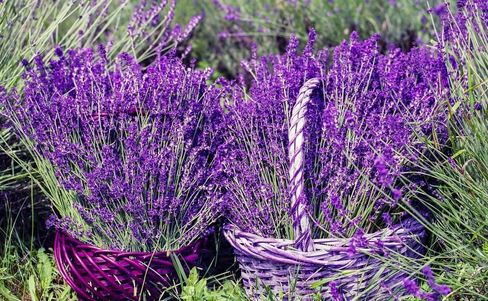

Lawenda
Lawenda koi nerwy, podkreśla smak sałatek, a nawet odstrasza mole. Przedstawiamy mniej znane oblicze lawendy.
Właściwości lawendy znano już w starożytności, a teraz, współcześnie, niektórzy o niej myślą, że to tylko piękna roślina o intensywnym zapachu. Wieki temu, gdy świat opanowała dżuma (zwana czarną śmiercią), próbowano walczyć z zarazą właśnie lawendą. Roślina służyła też do dezynfekcji, nie tylko domów, ale też szpitali, w których przebywali chorzy na dżumę. Ale i w dzisiejszych czasach lawenda ma sporo zastosowań. Warto przypomnieć, do czego jeszcze można wykorzystać lawendę.